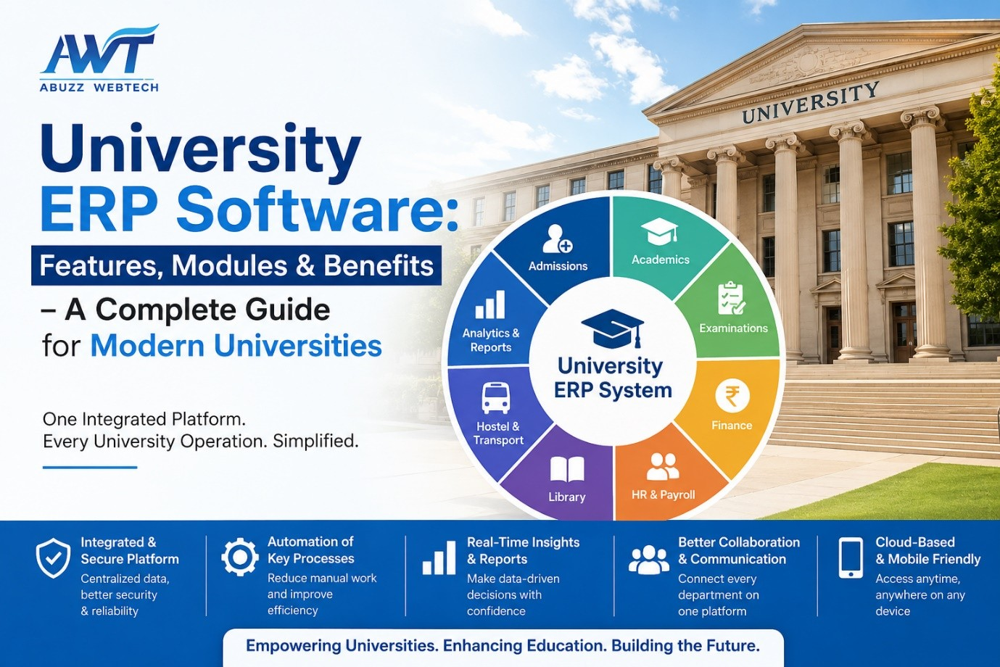

06 July 2026
University ERP Software: Features, Modules & Benefits
Managing a university involves coordinating admissions, academics, examinations, finance, HR, student services, and administration across multiple departments. Relying on manual paperwork, spreadsheets, or disconnected software often results in delays, duplicate data, communication gaps, and increased administrative costs.
A University ERP Software System brings every academic and administrative function together into one centralized platform. It automates routine tasks, improves collaboration between departments, provides real-time information, and enables university management to make faster and better-informed decisions.
Whether you manage a private university, government institution, autonomous college, deemed university, or multi-campus educational group, implementing the right ERP solution helps streamline operations, improve institutional efficiency, support regulatory compliance, and enhance the digital experience for students, faculty, and administrators.
What is a University ERP Software System?
A University ERP Software System is a centralized digital platform that automates and manages every aspect of university administration and academic operations. It integrates departments such as admissions, academics, examinations, finance, HR, library, hostel, transport, and administration into one unified system.
Instead of maintaining multiple standalone applications or paper-based records, universities can manage all institutional data from a single database. This eliminates duplicate entries, improves collaboration across departments, increases transparency, and provides accurate, real-time information whenever required.
By digitizing the complete student lifecycle—from admission to alumni management—University ERP Software enables institutions to improve operational efficiency while delivering better services to students, faculty members, and administrative staff.
Why Universities Need an ERP Software System
Modern universities face increasing expectations from students, parents, accreditation bodies, and regulatory authorities. Managing these growing demands manually is no longer practical.
Institutions without an integrated ERP often experience operational inefficiencies that affect academic performance, financial management, communication, and overall institutional productivity.
| Challenge | Impact on University |
|---|---|
| Manual paperwork | Slower processes and increased human errors |
| Multiple software applications | Duplicate data and poor coordination |
| Delayed report generation | Slower decision-making |
| Difficulty maintaining NAAC records | Higher compliance workload |
| Manual fee collection | Payment delays and reconciliation issues |
| Communication gaps | Reduced student and parent satisfaction |
A University ERP Software System addresses these challenges by digitizing institutional processes and connecting every department through a centralized platform. It enables seamless collaboration, reduces administrative workload, improves data accuracy, and enhances overall campus efficiency.
From admissions and examinations to finance, HR, library, hostel, and student lifecycle management, ERP software empowers universities to operate smarter while delivering an exceptional educational experience.
Key Features of University ERP Software
Choosing the right University ERP Software is about much more than automation. A modern ERP solution should simplify academic and administrative operations while supporting institutional growth, regulatory compliance, and an enhanced student experience.
1. Centralized Student Information System
Every student's academic journey begins with admission and continues through graduation and alumni engagement. A centralized Student Information System stores all student-related information in one secure database, making it accessible to authorized departments whenever required.
It maintains records such as personal information, academic history, attendance, fee status, examination results, certificates, scholarships, placements, and alumni details. This eliminates duplicate records while ensuring every department works with accurate, real-time information.
2. Online Admission Management
Admissions are one of the most critical processes in any university. A digital admission system simplifies the entire workflow while providing applicants with a faster and more transparent admission experience.
- Online application forms
- Document upload
- Merit list generation
- Entrance examination integration
- Online counselling
- Seat allocation
- Admission confirmation
- Online fee payment
Students can complete the complete admission process online, while administrators can monitor applications and admissions in real time.
3. Academic Management
Managing multiple departments, courses, semesters, faculty members, and academic calendars manually becomes increasingly difficult as institutions grow.
University ERP Software simplifies academic administration by enabling institutions to create academic calendars, manage course structures, allocate faculty, prepare timetables, monitor syllabus completion, and track academic performance from one centralized platform.
4. Examination & Evaluation Management
University examinations involve several interconnected activities, including scheduling, hall ticket generation, internal assessments, evaluation, grading, transcript generation, and result publication.
ERP software automates the complete examination lifecycle, reducing manual work while improving accuracy, transparency, and faster result processing.
- Exam scheduling
- Hall ticket generation
- Internal assessment
- Marks entry
- Grade calculation
- Result declaration
- Transcript generation
- Revaluation management
5. Fee Management
Managing thousands of student fee transactions every semester requires a secure and reliable digital system.
University ERP Software enables online fee collection through multiple payment gateways while supporting instalments, scholarships, concessions, late fee calculations, automatic receipt generation, and complete financial reporting.
Students enjoy convenient online payments, while finance departments gain complete visibility into collections, outstanding dues, and revenue reports.
6. Attendance Management
Attendance tracking plays an important role in maintaining academic discipline and meeting regulatory requirements.
ERP software enables universities to digitally record student and faculty attendance, generate attendance reports, monitor shortages, and automatically notify students whenever attendance falls below required levels.
7. Human Resource & Payroll Management
Universities employ teaching staff, administrative employees, and support personnel, making HR management both complex and time consuming.
A University ERP streamlines recruitment, employee records, leave management, payroll processing, statutory compliance, and performance appraisals through one integrated HR module.
8. Finance & Accounting
Financial transparency is essential for every educational institution. ERP software provides comprehensive accounting tools that simplify budgeting, auditing, and financial planning.
- Budget Management
- General Ledger
- Accounts Payable
- Accounts Receivable
- Vendor Management
- Audit Reports
- Financial Statements
With centralized finance management, university administrators can monitor income, expenses, budgets, and institutional financial performance in real time.
Core Modules of a University ERP Software System
A comprehensive University ERP Software consists of multiple integrated modules that work together to automate academic, administrative, and financial operations. Each module shares data seamlessly across departments, improving collaboration, accuracy, and overall institutional efficiency.
| Module | Purpose |
|---|---|
| Admission Management | Complete digital admission process |
| Student Information System | Student lifecycle management |
| Academic Management | Curriculum, timetable & semester planning |
| Examination Management | Assessment, grading & result processing |
| Fee Management | Fee collection, receipts & scholarships |
| HR & Payroll | Employee administration and payroll |
| Finance & Accounts | Budgeting, accounting & auditing |
| Library Management | Digital library operations |
| Hostel Management | Room allocation and occupancy management |
| Transport Management | Vehicle routing and student transport |
| Learning Management System (LMS) | Online teaching and learning |
| Alumni Management | Alumni engagement and networking |
Benefits of Implementing a University ERP Software System
Implementing a University ERP Software System is more than adopting new technology—it's about transforming the way an institution operates. By connecting every department through a centralized platform, universities can improve efficiency, reduce administrative workload, and deliver an exceptional experience for students, faculty, and administrators.
1. Improved Operational Efficiency
Universities manage thousands of academic and administrative activities every semester. Manual processes consume valuable time and increase the chances of human error.
A University ERP Software automates repetitive tasks such as admissions, timetable preparation, attendance, examinations, fee collection, payroll processing, and report generation. This enables staff and faculty members to focus on academic excellence instead of paperwork.
2. Better Decision-Making with Real-Time Data
University leadership requires accurate information to make informed strategic decisions. ERP software provides interactive dashboards and analytical reports that present institutional data in real time.
- Admission statistics
- Student enrollment trends
- Attendance analysis
- Fee collection reports
- Examination performance
- Faculty workload
- Department-wise performance
Instead of waiting for manually prepared reports, administrators can instantly access reliable information whenever required.
3. Enhanced Student Experience
Today's students expect fast, digital, and self-service facilities. University ERP Software provides a dedicated student portal where learners can manage most academic activities independently.
- Online admissions
- Digital fee payment
- Attendance tracking
- Hall ticket download
- Online examination results
- Study material access
- Assignment submission
- Instant notifications
This improves transparency while significantly reducing the workload of administrative offices.
4. Improved Communication Across Campus
One of the biggest challenges in higher education is maintaining smooth communication between departments, faculty members, students, and parents.
A University ERP Software improves communication through integrated SMS, Email, Mobile App notifications, circular management, event announcements, faculty communication, and parent updates—all from a single platform.
5. Better Data Security
Universities handle sensitive academic, financial, and employee data. Protecting this information is essential for maintaining institutional trust and regulatory compliance.
Modern University ERP Software includes advanced security features such as role-based access control, data encryption, audit logs, automatic backups, cloud security, and multi-level authentication to ensure institutional data remains safe and secure.
University ERP vs Traditional University Management
Traditional university administration often relies on manual paperwork, spreadsheets, and disconnected software applications. These methods are time-consuming, prone to errors, and make collaboration between departments difficult.
A modern University ERP Software centralizes every academic and administrative process into one integrated platform, helping institutions improve productivity, transparency, and decision-making.
| Traditional Process | University ERP Software |
|---|---|
| Paper-based records | Digital centralized database |
| Separate software for each department | Single integrated platform |
| Manual report preparation | One-click reports & dashboards |
| Offline fee payment | Online payment gateway integration |
| Slow communication | Instant SMS, Email & Mobile App notifications |
| Manual attendance | Digital attendance tracking |
| Lengthy admission process | Complete online admission workflow |
| Delayed result declaration | Automated examination & result processing |
How University ERP Supports NAAC, NBA & NEP 2020
Modern universities must comply with various accreditation standards and government education policies. A comprehensive University ERP Software helps institutions manage documentation, academic records, outcome-based education, and reporting requirements with ease.
1. NAAC Ready
Preparing for NAAC accreditation requires collecting and maintaining data from multiple departments. A University ERP centralizes all institutional records, making accreditation preparation faster, easier, and more accurate.
- Student progression records
- Faculty achievements
- Research publications
- Academic performance reports
- Infrastructure utilization
- IQAC documentation
- Feedback management
- Institutional reports
2. NBA Compliance
Engineering and technical institutions require detailed documentation for NBA accreditation. University ERP Software simplifies this process by managing Outcome Based Education records and academic assessment reports.
- Course Outcomes (CO)
- Program Outcomes (PO)
- Assessment reports
- Faculty workload
- Laboratory records
- Student performance analysis
3. Academic Bank of Credits (ABC) Integration
The Academic Bank of Credits (ABC) enables students to digitally store and transfer academic credits between institutions.
University ERP Software with ABC integration allows institutions to register Academic Bank IDs, synchronize student credits, manage academic records, and reduce manual data submission while ensuring compliance with NEP 2020 guidelines.
4. Outcome Based Education (OBE)
Outcome Based Education focuses on measuring student learning outcomes instead of simply completing the syllabus.
University ERP Software supports OBE by enabling institutions to define Course Outcomes (CO), map Program Outcomes (PO), measure attainment levels, analyze learning outcomes, and generate accreditation-ready reports for continuous academic improvement.
5. On Screen Marking (OSM)
Traditional answer-sheet evaluation often leads to delays, inconsistencies, and excessive paperwork.
On Screen Marking (OSM) enables secure digital evaluation with standardized marking, real-time evaluator monitoring, faster result processing, reduced paperwork, and improved accuracy for large-scale university examinations.
6. Mandatory Disclosure & Student Progression
Universities are required to maintain and publish institutional information for regulatory authorities and accreditation agencies.
A University ERP simplifies the management of mandatory disclosure documents, faculty information, infrastructure records, committee reports, placement statistics, alumni engagement, student progression, MDM, and student absorption data from a centralized platform.
Why Choose ABuzz WebTech for University ERP Software?
With over 25+ years of industry experience and the trust of 1,000+ educational institutions, ABuzz WebTech is one of India's leading providers of comprehensive University ERP Software solutions.
Our cloud-based ERP is designed to simplify academic and administrative operations while helping universities achieve digital transformation, improve efficiency, and deliver an exceptional experience for students, faculty, administrators, and management.
ABuzz University ERP supports modern educational requirements including NEP 2020, NAAC Accreditation, NBA Compliance, Academic Bank of Credits (ABC), Outcome Based Education (OBE), On Screen Marking (OSM), Mandatory Disclosure, MDM, Student Absorption Reports, and much more.
From admissions and academics to examinations, finance, HR, LMS, hostel, library, transport, and alumni management, our integrated ERP platform enables universities to manage every operation from a single, secure, cloud-based system.
- 25+ Years of Experience
- Trusted by 1,000+ Educational Institutions
- Complete Cloud-Based University ERP
- NEP 2020 Ready
- NAAC & NBA Compliance Support
- ABC Portal Integration
- Outcome Based Education (OBE)
- On Screen Marking (OSM)
- Mobile App for Students, Faculty & Parents
- Dedicated Training & Support
Contact Abuzz WebTech today to schedule a personalized demo and discover how our University ERP Software can simplify campus management, improve operational efficiency, and support your institution's long-term growth.
Frequently Asked Questions
1. What is University ERP Software?
University ERP Software is an integrated platform that automates admissions, academics, examinations, finance, HR, student lifecycle management, and administrative processes through one centralized system.
2. Who should use a University ERP System?
Private universities, government universities, autonomous colleges, deemed universities, engineering institutes, multi-campus educational groups, and higher education institutions can all benefit from a University ERP solution.
3. Is University ERP Software suitable for NAAC accreditation?
Yes. University ERP Software helps institutions maintain centralized records, generate accreditation reports, manage IQAC documentation, and organize data required for NAAC assessments.
4. Does University ERP support NEP 2020?
Yes. Modern University ERP solutions support flexible curriculum management, Academic Bank of Credits (ABC), digital academic records, Outcome Based Education (OBE), and other features required to align with NEP 2020 guidelines.
5. Can University ERP Software be customized?
Yes. Enterprise-grade University ERP Software can be customized to match the academic structure, workflows, departments, approval processes, and institutional policies of individual universities.